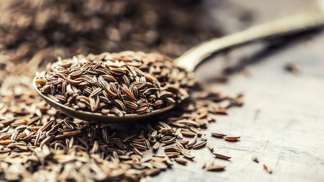

 Jintan (Trachyspermum roxburghianum syn. Carum roxburghianum) merupakan tumbuhan menjalar yang bijinya dapat digunakan untuk rempah-rempah dan obat-obatan. Biji tanaman ini sering digunakan sebagai bumbu dapur untuk masakan India. Tanaman ini banyak dibudidayakan di India dan Asia Tenggara. Rasanya lebih dekat kepada kelabat atau klabet daripada jenis rempah lain